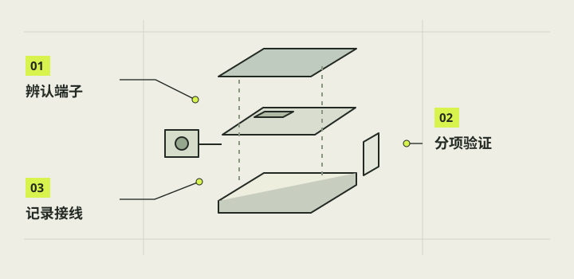

控件、供电与元器件接线
基础成像已经跑通后，再让手指动作进入相机：一只拉杆拍照，一只按钮负责短按唤醒与长按正常关机，白色灯环表示系统运行状态。本章给出 本项目这台 Pi3B+ 的已记录针位和验证顺序；它不是任意树莓派版本的通用接线图。接线、软件占用检查和真实拍照要逐项对应。

本章完成目标
- 区分触点输入、灯输出与主供电
- 按本机针表核对一拉杆一按钮
- 把一次动作、一张照片和安全关机分别验收
开始前准备好
- 第 08 章已验证基础预览与 JPEG 保存
- 主板及当前软件的目标 GPIO 占用和启动配置已核
- 已正常关机并断开电池、充电与其他供电
- 控件线色和端子已在实物上复核
本项目已核对的线路对照。
这是一张用途与针号表，不是从某个视角看到的排针图。先辨认 Pi3B+ 的物理针号与 BCM 编号；端子与颜色仅对应本项目实物，换线、换板或重装系统后重新核查。改接线前须断开全部供电。
| 用途 | 本项目连接 | 核对条件 |
|---|---|---|
| 主板供电 | 匹配的 Micro USB 电源 → PWR IN | 按钮不串接在整机 5V 主供电线上 |
| 屏幕供电 | 屏幕红线 → 物理2 / 5V；黑线 → 物理6 / GND | 只对应已核对屏幕版本；原插壳的物理4位置没有接线 |
| 快门拉杆 | 灰 B → 物理9 / GND；蓝 C → 物理11 / BCM17 | 脱离主板先确认触点；使用3.3V逻辑，不送入5V |
| 电源按钮 NO | 黄 NO → 物理5 / BCM3；黑 NO → 物理14 / GND | 必须匹配系统配置及电源服务；关机后短按唤醒不等于切断电池 |
| 白灯正极 | 物理15 / BCM22 → 约1kΩ串联线 → 红 LED＋ | 旧版0.4有基础亮灭反馈；新系统先核占用、配置与电阻 |
| 白灯负极 | 白 LED− → 物理20 / GND | 与按钮NO独立；不可省略正极支路的限流 |
| 镜头与显示信号 | 镜头排线 → CAMERA；显示排线 → DISPLAY | CSI与DSI分别核对；接触面方向查对应硬件说明 |
- NO 常开触点
- 静止时断开，操作时闭合，松手后回到断开。
- 去抖
- 把机械触点短时间内的多次跳变归为一次有效动作。
先分清三条线路
快门拉杆是输入，按钮的两根 NO 线也是输入，白灯红白线是独立的 LED 电路；主板供电仍经 Micro USB PWR IN。不要把按钮串在整机 5V 主线上，也不要把灯当作按键反馈。先用万用表通断档在脱离主板的控件远端核静止断开、按住导通、松开断开，并轻晃线束确认接头稳定。
注意 / 通断档不测带电线路；LED 引线不按触点通断法短接。
核本机拉杆针位
D 的 2026-10-24 实物核对把拉杆中间 B 定为灰线、C 定为蓝线；本机灰 B 接物理 9/GND，蓝 C 接物理 11/BCM17。该输入用 3.3V 逻辑、内部上拉和接地闭合作动作，不向触点送 5V。保持现有屏幕红 2、黑 6、4 空位不动。接妥后先用排针正上方照片复核，再进软件测试。
注意 / 旧图中靠 USB 端的蓝母头位置未核，不能沿用。
核本机按钮针位
当前实机方案为按钮黄 NO 接物理 5/BCM3，黑 NO 接物理 14/GND。BCM3 同时涉及启动唤醒，必须先核当前系统占用和配置，再依据匹配的软件版本启用；换板或重装系统不能直接继承结论。短按用于关机后唤醒，运行时长按约 3 秒发起正常关机；它不会切断电池输出，照片保存与关机协调仍由软件处理。
注意 / 不要把物理 5 误读为 BCM5，也不要带电换针。
按版本处理白灯
本机旧版 0.4.0 的白灯联调为红 LED＋经约 1kΩ 串联转接线到物理 15/BCM22，白 LED−到物理 20/GND，用户已反馈系统运行亮、关机灭、唤醒再亮。早期红线接物理 1/3.3V 仅为常亮测试。新装或换件时先核阻值、绝缘、GPIO22 占用及匹配软件；改线只能在全断电后进行。
注意 / 未测灯内部限流、GPIO 实际电流或新器件规格时，不把 LED 无电阻直连 GPIO。
逐项做功能回归
普通单张下轻拨拉杆一次，确认一张照片实际保存，保持拨住和松开都不额外拍；拍摄忙碌时的输入不得排队。再核按钮短按和较短按压不误关机、长按后正常保存并停机、保持电池连接后短按唤醒。最后核白灯在系统运行、退出相机到桌面、正常关机及再唤醒时的状态，同时重新检查触屏拍照。
注意 / 若开关金属杆或打印止挡先卡死，停止用力；不能用软件去抖掩盖机构故障。
完成后，逐项打勾。
勾选帮助你记录进度，不代表项目替你完成了实机验收。
遇到问题，从这里排查。
拨杆动作被软件看到，但没有照片
分开查机械接触、GPIO 事件、快门调用和文件保存；先确认同一版本的触屏拍照正常。
灯常亮或关机后不灭
核它是否仍接物理 1 常供电、1kΩ 是否串联，以及实际软件/启动配置；不要通过拔电代替正常关机。
按钮短按造成异常动作
停用该新接法，核实物 5/14、当前 GPIO3 占用与软件日志；不要反复长按试错。
本项目的实际进展
- D 的 2026-10-25 无灯结果由用户反馈与日志支撑；保存未完成时关机协调并未覆盖。
- C 的 2026-10-26 旧版 0.4.0 白灯与自启动基本动作由用户反馈通过；最终针位没有新的助手目视照片验线，电流和长期循环未测。
- 本项目只有一个拍照拉杆和一个开关机按钮；历史两组试样或旧 GPIO22 候选图不能作为当前接线依据。
- New Cam 1.0 于 2026-10-29 的修复安装报告为 success=true、status=staged；boot/session 已配置，仍待下一次正常开机及拍照、按钮、灯的完整回归。
资料与核对依据
- D 2026-10-24 L1 实物线色 · camera-project/D-控件供电/handoff.md
- 无灯开关机用户测试 · camera-project/D-控件供电/交付/20261025-无灯开关机实测结果/测试结果.md
- C 白灯与自启动用户实测 · camera-project/C-软件/qa/r4-live-setup-20261026/用户实测结果.md
- C 最新安装边界 · camera-project/C-软件/handoff.md
- 树莓派官方 GPIO 针表 ↗
- New Cam 1.0 实机修复安装报告 · camera-project/C-软件/qa/newcam-1.0/device-reports/20261029-005057-v1-repair-install-summary-c43f833093b74b8883b4a79df80f5062.json
资料核对日期：2026-10-30。不同硬件、系统版本和材料需要重新验证。